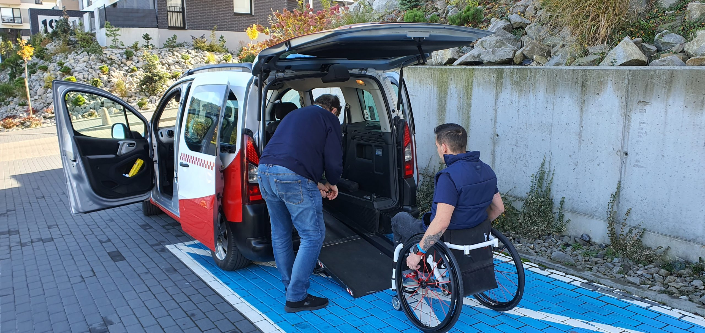
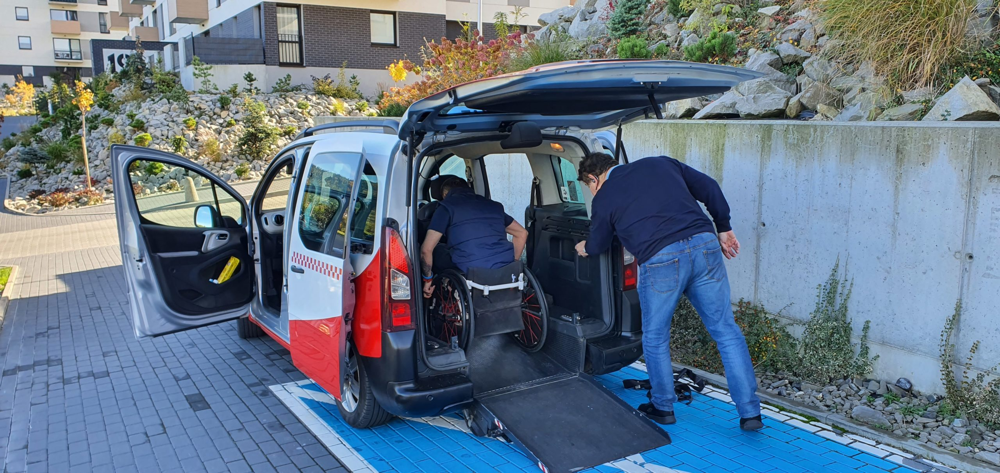
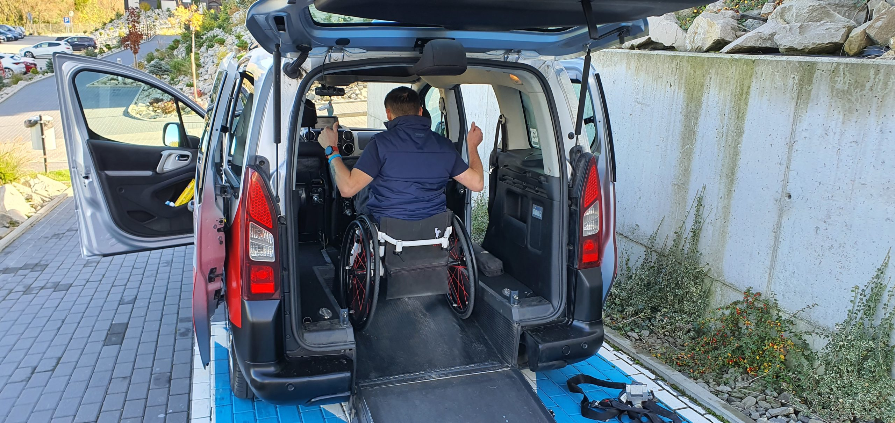
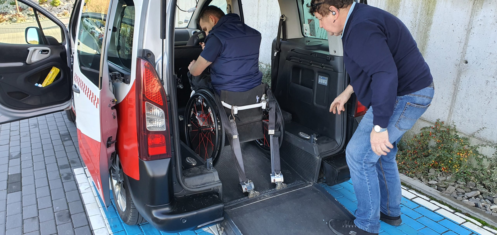
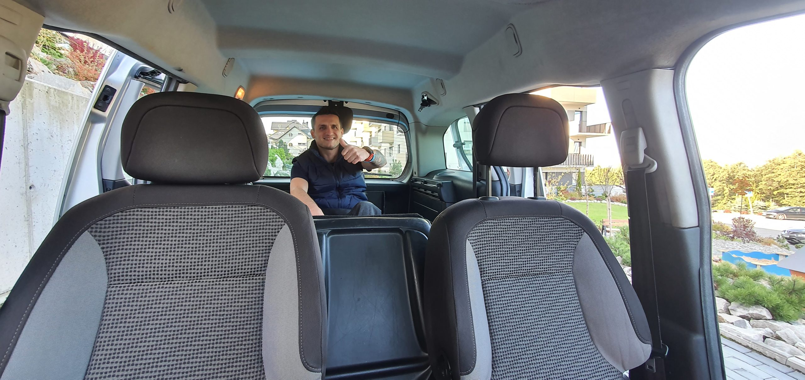

Pas przedni
Pierwszy punkt mocowania zabezpieczający wózek od przodu — stabilizacja przed ruchem do przodu podczas hamowania.

Pierwszy pojazd w regionie spełniający najwyższe standardy przewozu osób z niepełnosprawnością. Bez konieczności przesiadania, zabezpieczenie w 6 minut, 3-punktowy system pasów.

Wiemy, jak wielkim problemem dla osób niepełnosprawnych jest przemieszczanie się na badania, rehabilitację czy do sklepu. Dlatego uruchomiliśmy pierwsze auto, które spełnia najwyższe standardy w transporcie ludzi z niepełnosprawnością.
Wiemy, że całe zaplecze jakie mamy do zaoferowania, ułatwi przemieszczanie się każdej osobie na wózku bez konieczności przesiadania się. Wjazd rampą prosto do środka pojazdu — komfortowo i bezpiecznie.
Cały proces zabezpieczenia trwa maksymalnie 6 minut. W trakcie tego czasu pasażer zostaje umiejscowiony w pojeździe oraz zabezpieczony z trzech punktów.
Pierwszy punkt mocowania zabezpieczający wózek od przodu — stabilizacja przed ruchem do przodu podczas hamowania.
Drugi punkt mocowania z tyłu wózka — zabezpieczenie przed ruchem wstecz podczas przyspieszania pojazdu.
Trzeci pas zabezpieczający tułów pasażera, podobnie jak standardowy pas bezpieczeństwa w samochodzie.
Zdjęcia pojazdu Okay Taxi przystosowanego do przewozu osób na wózkach inwalidzkich — wjazd rampą, zabezpieczenie i komfortowe wnętrze.




Realizujemy kursy terminowe z dużym wyprzedzeniem z atrakcyjnym rabatem. Rezerwuj regularne przejazdy — na rehabilitację, do lekarza, na badania — i korzystaj z niższych stawek.
Nasz kierowca odpowiednio dopasuje ofertę do Twoich potrzeb. Regularne trasy, nietypowe godziny, szczególne wymagania — znajdziemy rozwiązanie.
Wystawiamy imienne faktury za zrealizowany kurs lub kursy — w celu uzyskania zwrotu z programu 1% podatku. Skompletuj dokumentację i odzyskaj część kosztów transportu.
Tak. Okay Taxi uruchomiło pierwszy pojazd w regionie spełniający najwyższe standardy w transporcie osób z niepełnosprawnością. Pasażer wjeżdża do pojazdu rampą bezpośrednio na wózku — bez konieczności przesiadania się.
Cały proces zabezpieczenia trwa maksymalnie 6 minut. W tym czasie pasażer zostaje umiejscowiony w pojeździe i zabezpieczony z trzech punktów: pas przedni, pas tylni oraz pas tułowia.
Tak. Pojazd Okay Taxi dla niepełnosprawnych obsługuje wszystkie codzienne potrzeby: przejazdy na badania, rehabilitację, do sklepu, lekarza, na spotkania rodzinne. Kursy można zamówić jednorazowo lub jako regularne terminowe.
Tak. Realizujemy kursy terminowe z dużym wyprzedzeniem z atrakcyjnym rabatem. Rezerwuj z wyprzedzeniem regularne przejazdy (np. na cotygodniową rehabilitację) — otrzymasz niższą stawkę. Kierowca dopasuje ofertę do Twoich potrzeb.
Tak. Okay Taxi wystawia imienne faktury za zrealizowany kurs lub kursy w celu uzyskania zwrotu z programu 1% podatku. To pozwala odzyskać część kosztów transportu z urzędu skarbowego.
Zadzwoń pod numer 720 535 353 i poinformuj dyspozytora, że potrzebujesz pojazdu przystosowanego do przewozu osoby na wózku. Dyspozytor skieruje odpowiedni samochód i doświadczonego kierowcę. Dla kursów terminowych — rezerwuj z wyprzedzeniem.
Tak. Kierowcy Okay Taxi są przeszkoleni w obsłudze osób z niepełnosprawnościami. Kierowca pomaga w wjeździe rampą, ustawieniu wózka w pojeździe i zabezpieczeniu 3-punktowym systemem pasów.
Okay Taxi uruchomiło pierwszy pojazd w regionie Bielska-Białej spełniający najwyższe standardy w transporcie ludzi z niepełnosprawnością. Wiemy, jak wielkim problemem dla osób na wózkach jest codzienne przemieszczanie się — na badania, rehabilitację, do sklepu. Nasze rozwiązanie eliminuje ten problem.
Pojazd umożliwia przewóz pasażera na wózku bez konieczności przesiadania się. Wjazd rampą prosto do środka samochodu, a następnie zabezpieczenie w pojeździe trwa maksymalnie 6 minut. Pasażer jest zabezpieczony z trzech punktów: pas przedni (stabilizujący wózek od przodu), pas tylni (zapobiegający ruchowi wstecznemu) oraz pas tułowia (chroniący pasażera).
Usługa obejmuje kursy na badania lekarskie, rehabilitację, zakupy i codzienne sprawy. Realizujemy także kursy terminowe z dużym wyprzedzeniem z atrakcyjnym rabatem — idealne dla regularnych przejazdów (np. cotygodniowa rehabilitacja). Kierowca odpowiednio dopasuje ofertę do indywidualnych potrzeb pasażera.
Dla wsparcia finansowego wystawiamy imienne faktury za zrealizowane kursy w celu uzyskania zwrotu z programu 1% podatku. Pozwala to pasażerom odzyskać część kosztów transportu z urzędu skarbowego.
Kierowcy Okay Taxi są przeszkoleni w obsłudze osób z niepełnosprawnościami — pomagają w wjeździe rampą, ustawieniu wózka i zabezpieczeniu pasów. Zamówienie: 720 535 353 (czynny 24/7).